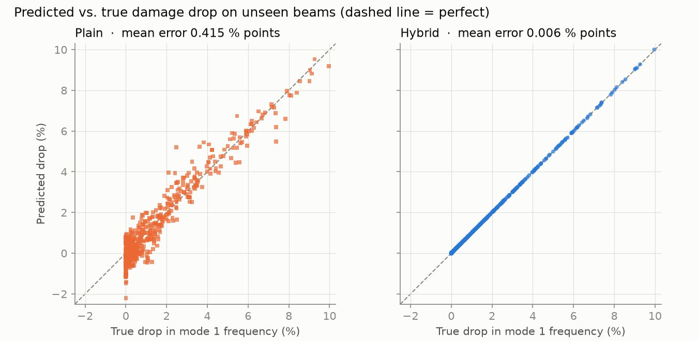
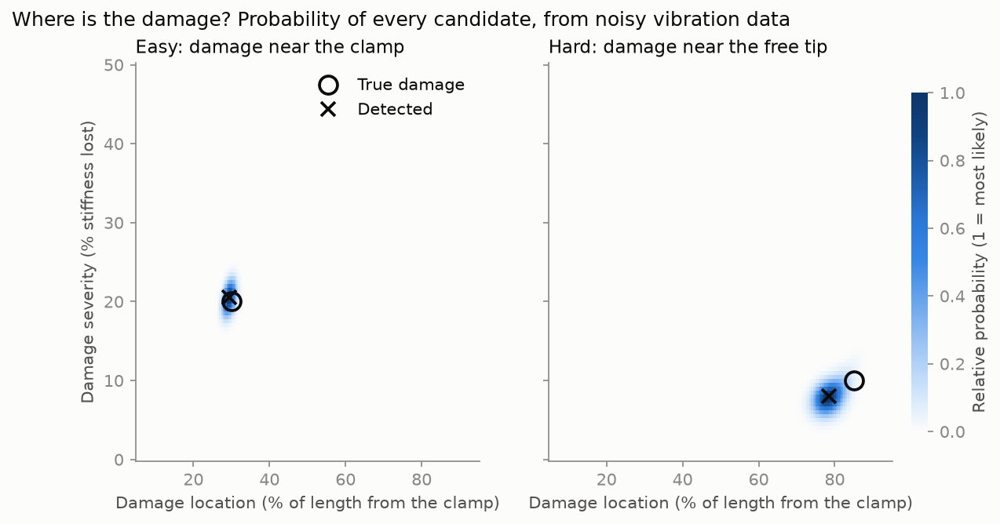

BeamTwin: a digital twin that finds damage in beams from their vibration
When a beam cracks it gets less stiff, and its natural frequencies drop. BeamTwin works backwards from those frequencies to say where the damage is and how bad it is.
The problem
Vibration-based structural health monitoring rests on a simple idea: damage lowers stiffness, and lower stiffness lowers natural frequencies. Turning a few measured frequencies back into a damage location is an inverse problem, and solving it needs thousands of simulations per estimate.
A finite element model is accurate but too slow to run thousands of times on demand. The question was whether a neural network could stand in for it without losing the small frequency shifts that damage causes (about 1.5% on average).
What I did
- Wrote an Euler-Bernoulli beam finite element solver from scratch and validated it against textbook formulas: tip deflection matches PL³/3EI exactly, and the first four natural frequencies agree to within 0.001%.
- Trained two identical networks on the solver's results. The plain one learns everything from 7 inputs. The hybrid one gets the healthy frequencies from the exact cantilever formula and learns only the damage-induced ratio, which dimensional analysis shows depends on just 2 inputs.
- Built a Bayesian detector that scores 18,281 candidate damage states in one batch with the surrogate, and reports the most likely location and severity with 90% ranges and the probability that the beam is damaged at all.
- Served it with FastAPI and Docker, tested with pytest in GitHub Actions, and deployed a web demo where you hide damage in a beam and watch the twin find it.
Results


| Plain network | Hybrid (physics + network) | |
|---|---|---|
| Mean frequency error | 0.38–0.42% | 0.006–0.008% |
| Worst frequency error | 2.1–2.8% | 0.04–0.06% |
| Signal-to-error ratio | 3–4 | 190–240 |
Test set: 600 unseen beams. Damage lowers frequencies by about 1.5% on average, so the plain network's error is too large to see it reliably.
| Sensor noise | Low | Medium | High |
|---|---|---|---|
| Location error, median | 0.3% of length | 0.5% | 1.3% |
| Damaged beams detected | 100% | 98% | 100% |
| False alarms on healthy beams | 0% | 4% | 32% |
Detector accuracy on 200 damaged and 50 healthy simulated beams per noise level.
Limitations
- All results so far use simulated data. Validation on a physical clamped steel strip is the next step.
- Uniform beams and a single damage zone only. The detector assumes geometry and material are known exactly.
- With noisy sensors (±0.5% frequencies), about a third of healthy beams raise a false alarm.
- The surrogate is only valid inside its training ranges (0.5–2 m long, metals, up to 50% stiffness loss).